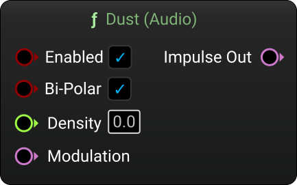

MetaSound Branches
Dust
Category: Generators
Generates randomly timed impulses (uni or bi-polar) alongside triggers, with optional audio-rate modulation.

Inputs
| Name | Description | Type |
|---|---|---|
| Enabled | Enable or disable the dust node. | Bool |
| Bi-Polar | Toggle between bipolar and unipolar impulse output. | Bool |
| Seed | Seed for the random number generator (-1 uses the current time). | Int |
| Density | Base density of impulses (roughly equivalent to Hz). | Float |
| Density Modulation | Audio modulation for density. | Audio |
| Amp Variation | Base amplitude variation (0=fixed, 1=fully random). | Float |
| Amp Variation Modulation | Audio modulation for amplitude variation. | Audio |
Outputs
| Name | Description | Type |
|---|---|---|
| Impulse Out | Generated impulse output. | Audio |
| Trigger Out | Generated trigger output. | Trigger |
Charles Matthews 2025